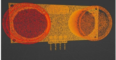
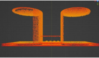
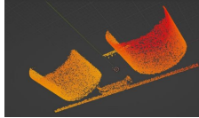
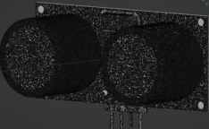
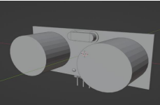
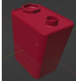
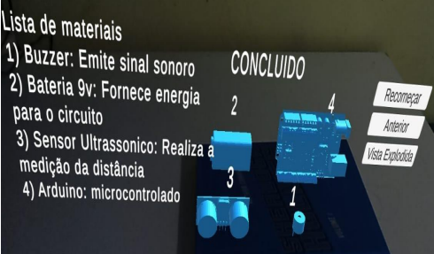
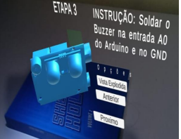
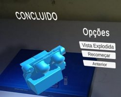

Ambientes Virtuais com Nuvem de Pontos ToF
Python · Unity · Câmera Time-of-Flight
Virtual Environments with ToF Point Cloud
Python · Unity · Time-of-Flight Camera
Protótipo de sistema computacional para reconstrução 3D de objetos baseada em nuvens de pontos ToF, aplicado em ambiente virtual imersivo de realidade mista para treinamento de trabalhadores de chão de fábrica.
Computational system prototype for 3D object reconstruction based on ToF point clouds, applied in an immersive mixed reality virtual environment for factory floor worker training.
O projeto desenvolve um protótipo que utiliza câmera Time-of-Flight para capturar nuvens de pontos de objetos reais e reconstruí-los em ambientes virtuais de realidade mista, viabilizando treinamentos imersivos para trabalhadores industriais.
The project develops a prototype that uses a Time-of-Flight camera to capture point clouds of real objects and reconstruct them in mixed reality virtual environments, enabling immersive training for industrial workers.
Captura de profundidade em tempo real com câmera Time-of-Flight, gerando nuvens de pontos densas e precisas de objetos e ambientes físicos.
Real-time depth capture with a Time-of-Flight camera, generating dense and accurate point clouds of physical objects and environments.
Processamento e reconstrução de malhas 3D a partir das nuvens de pontos capturadas, utilizando algoritmos de reconstrução de superfície em Python.
Processing and reconstruction of 3D meshes from captured point clouds, using surface reconstruction algorithms in Python.
Integração dos modelos 3D em ambiente virtual imersivo Unity para simulação de montagem de equipamentos industriais em realidade mista.
Integration of 3D models into an immersive Unity virtual environment for industrial equipment assembly simulation in mixed reality.
Etapas do desenvolvimento — da construção do sistema de captura até a renderização final e modelo físico do MVP.
Development stages — from building the capture system to the final rendering and physical MVP model.








